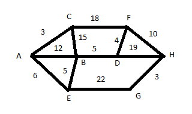
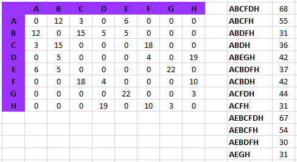

Week 7 Ex. 1: Using the graph given in class, determine by brute force the shortest path from A to H. Show by hand at least 10 different paths with their total weights. (There are 8 vertices in this graph).

